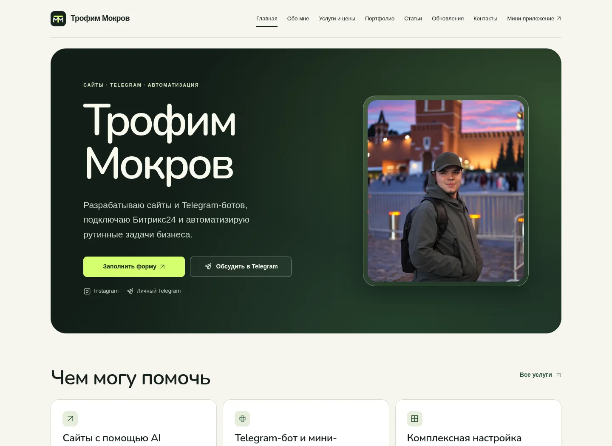

Этот сайт: создан вместе с AI-агентом
Собственный сайт — пример того, как я использую искусственный интеллект для создания и постепенного развития цифрового проекта.

Задача
Объяснить несколько направлений работы без перегруженного первого экрана и дать посетителю ясные ориентиры по стоимости.
Что сделано
С помощью AI-агента созданы структура, дизайн, страницы, статьи и мобильная навигация. Изменения проверялись в браузере. Содержание и оформление постепенно дополняются.
- На главной выбрать направление работы и посмотреть стартовые условия.
- Сравнить услуги, открыть проекты или найти ответ в библиотеке.
- Перейти к форме Битрикс24, написать в Telegram или открыть Mini App.
Инструменты
AI-агент Codex, HTML, CSS, JavaScript и генератор на Python без внешних зависимостей.
Результат
Реализован многостраничный сайт. Коммерческие показатели и результаты привлечения клиентов пока не измерялись.